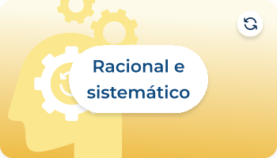
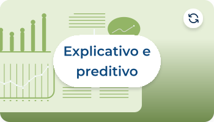
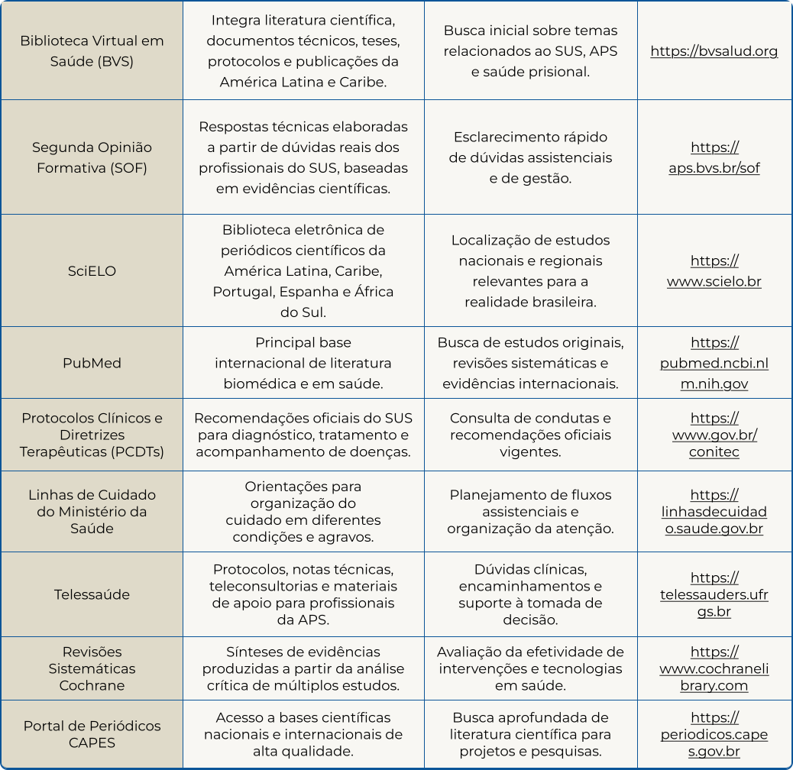

Empírico e verificável
Baseia-se em evidências observáveis que podem ser testadas e reproduzidas.
A elaboração do PI representa uma oportunidade de transformar problemas identificados na prática cotidiana em conhecimento científico capaz de qualificar o cuidado em saúde.

A produção de conhecimento científico na saúde requer a utilização de métodos adequados para investigar problemas relevantes aos indivíduos, às comunidades e aos serviços.
Desta forma, vamos conhecer um pouco mais sobre como diferenciar o conhecimento científico do senso comum.
O senso comum corresponde ao conhecimento construído a partir das seguintes situações, confira.

Embora seja importante para a vida em sociedade e influencie a forma como as pessoas percebem a saúde e a doença, o senso comum não é usualmente submetido à verificação sistemática ou à análise crítica (Marconi; Lakatos, 2021). Alpert (2019) define senso comum como o julgamento baseado numa percepção simples dos fatos, fundado na experiência de vida.
No cotidiano dos serviços de saúde, muitas decisões são influenciadas pela experiência profissional, pela observação da prática e por conhecimentos compartilhados entre colegas. No entanto, estes nem sempre correspondem ao que as melhores evidências científicas demonstram. Por isso, é fundamental que a experiência seja constantemente complementada e confrontada com o conhecimento científico, que é produzido e validado por meio de pesquisas, revisão por pares e debate entre especialistas (Santos; Henrique; Pernambuco, 2024).
O conhecimento científico é produzido por meio das situações a seguir.

Sua construção envolve a formulação de hipóteses, a coleta e interpretação de dados e o registro transparente dos procedimentos, permitindo que os resultados sejam avaliados e reproduzidos por outros pesquisadores (Nazareno; Reisdorfer, 2023).
Diferentemente de outras formas de conhecimento, fundamenta-se em evidências verificáveis e permanece aberto ao questionamento e à revisão, o que confere maior confiabilidade às explicações produzidas sobre a realidade. É construído e validado coletivamente por comunidades científicas, por meio da revisão por pares, da colaboração e do debate crítico. Assim, não representa uma verdade absoluta, mas um conhecimento em constante aperfeiçoamento, que evolui à medida que novas evidências são produzidas (Marcelino; Moraes, 2024).
As principais características do conhecimento científico são descritas por Melo et al. (2024), acompanhe a seguir.
Rigor e fundamentação
Empírico e verificável
Baseia-se em evidências observáveis que podem ser testadas e reproduzidas.

Racional e sistemático
Fundamenta-se na lógica e segue métodos e procedimentos organizados.
Objetivo
Busca minimizar crenças, opiniões e preconceitos pessoais na análise.
Dinâmica e evolução
Crítico e provisório
Está sujeito ao questionamento permanente e pode ser revisado ou substituído.
Acumulativo
Novos conhecimentos são incorporados e integrados aos conhecimentos existentes.

Explicativo e preditivo
Busca compreender fenômenos atuais e antecipar comportamentos futuros.
Na Medicina de Família e Comunidade (MFC), especialmente no contexto do sistema prisional, diferenciar essas formas de conhecimento é fundamental para qualificar a prática profissional. Embora as experiências dos trabalhadores e usuários contribuam para a compreensão da realidade, as intervenções em saúde devem ser planejadas e avaliadas com base em evidências científicas. Há também o conhecimento do paciente como saber leigo estruturado, traduzido a partir dos saberes das comunidades e das bagagens culturais do usuário, que influenciam fortemente como as pessoas compreendem seu processo de cuidado em saúde.
Neste aspecto, é importante evitar conflitos e choques com a medicina acadêmica, gerando estigmas e preconceitos que causariam prejuízos na atenção à saúde. Faz-se necessária a intersecção entre o conhecimento científico e a compreensão em saúde dos usuários para a co-construção de planos de cuidado entre médico e paciente (Santos et al., 2022). Dessa forma, é possível transformar observações cotidianas em perguntas de pesquisa relevantes e desenvolver ações mais eficazes para responder às necessidades de saúde da população.
O conhecimento científico é essencial para qualificar o cuidado em saúde, orientando decisões com base nas melhores evidências disponíveis, aliadas à experiência dos profissionais e às necessidades e preferências dos usuários. Essa integração fortalece a prática baseada em evidências, contribui para a elaboração de protocolos e diretrizes clínicas e favorece cuidados mais seguros, efetivos e centrados na pessoa (Lopes-Júnior, 2023).
Na Medicina de Família e Comunidade, essa abordagem é particularmente relevante por apoiar decisões contextualizadas às necessidades dos indivíduos, das famílias e das comunidades, incluindo populações em situação de vulnerabilidade, como as pessoas privadas de liberdade.
Além de qualificar a prática assistencial, o conhecimento científico favorece a atualização contínua das ações de saúde, permitindo que novas evidências aperfeiçoem recomendações e intervenções. Sua incorporação crítica fortalece a oferta de cuidados mais equitativos, resolutivos e custo-efetivos, contribuindo também para a sustentabilidade dos sistemas de saúde (Connor et al., 2023).

De forma articulada com a busca pelo conhecimento científico, vamos compreender a seguir a importância do diagnóstico situacional para a construção do seu PI.
O planejamento de intervenções em saúde requer uma compreensão aprofundada da realidade em que os problemas estão inseridos. O diagnóstico situacional constitui uma etapa fundamental desse processo, pois permite identificar necessidades, reconhecer vulnerabilidades e compreender os fatores sociais, institucionais e epidemiológicos que influenciam as condições de saúde da população.
Neste tópico, serão discutidos os principais elementos para a construção do diagnóstico situacional, incluindo a análise do contexto social, dos determinantes da saúde, do perfil epidemiológico e das fontes de informação que subsidiam a identificação e a priorização dos problemas a serem enfrentados. Confira.
A elaboração de um projeto de intervenção em saúde prisional deve iniciar pelo reconhecimento do contexto social em que o problema está inserido. Além de descrever características da população atendida, o diagnóstico social busca compreender como as condições de vida, os vínculos sociais, a organização institucional e o acesso aos direitos influenciam o processo saúde-doença e a utilização dos serviços de saúde.
No sistema prisional, esse exercício exige que o profissional considere não apenas o ambiente intramuros, mas também os territórios de origem das pessoas privadas de liberdade e as redes sociais e institucionais que permanecem influenciando suas condições de saúde (Brasil, 2014; OPAS, 2022).
Para a construção desse diagnóstico, o médico pode recorrer a diferentes fontes de informação, tais como:

Também podem ser consultados documentos de planejamento e gestão, como Planos Municipais de Saúde, Relatórios Anuais de Gestão, diagnósticos territoriais e informações produzidas pelos serviços da RAS. Esses elementos permitem identificar características sociodemográficas da população, padrões de acesso aos serviços, principais demandas sociais e barreiras que podem interferir no cuidado.
Além das características individuais dos usuários, é importante compreender os contextos sociais que antecedem e acompanham o período de privação de liberdade.
Para isso, você deve considerar tanto as condições de vida e os recursos disponíveis nos territórios de origem das pessoas privadas de liberdade — como moradia, escolaridade, oportunidades de trabalho, acesso a serviços públicos e redes de apoio social — quanto às experiências vivenciadas no ambiente prisional.
Aspectos relacionados às condições de encarceramento, às relações institucionais, às oportunidades de acesso à saúde, educação e assistência social, bem como aos vínculos familiares e comunitários mantidos durante a prisão, podem influenciar diretamente as condições de saúde e as possibilidades de cuidado. A análise articulada desses diferentes contextos contribui para compreender os fatores que produzem ou agravam vulnerabilidades, favorecendo a elaboração de intervenções mais realistas, contextualizadas e integradas à rede de atenção e proteção social (Soares Filho; Bueno, 2016).
Seguem algumas questões que podem auxiliar a sua reflexão como profissional durante a construção do diagnóstico social.

Ao incorporar essas informações na introdução do projeto, você, profissional estudante, demonstra que o problema escolhido não é resultado apenas de fatores individuais, mas está relacionado a determinantes sociais, institucionais e territoriais que influenciam a saúde das pessoas privadas de liberdade. Dessa forma, o diagnóstico social contribui para:
A análise do contexto epidemiológico constitui uma etapa essencial do diagnóstico situacional e tem como finalidade compreender a magnitude, a distribuição e o impacto dos problemas de saúde presentes na população atendida.
No desenvolvimento de um projeto de intervenção, o objetivo não é apenas descrever agravos ou apresentar indicadores, mas utilizar informações epidemiológicas para fundamentar a escolha do problema, justificar sua relevância e demonstrar sua importância para a saúde das pessoas privadas de liberdade.
A utilização sistemática de dados permite que a identificação de prioridades seja baseada em evidências, reduzindo a dependência de percepções individuais e fortalecendo o planejamento das ações de saúde.
A compreensão do contexto epidemiológico é particularmente relevante na saúde prisional, em que a população privada de liberdade apresenta um perfil de adoecimento distinto daquele observado na população geral.
Estudos realizados no Brasil e em outros países da América do Sul evidenciam elevada carga de doenças infecciosas, transtornos mentais, uso problemático de álcool e outras drogas, além de condições crônicas frequentemente associadas a situações de vulnerabilidade social e dificuldades de acesso aos serviços de saúde (Leon-Jimenez, 2024; Orth et al. 2025).
A análise desses padrões de adoecimento, de sua magnitude e evolução ao longo do tempo contribui para a identificação de necessidades prioritárias e para o planejamento de intervenções mais adequadas à realidade local. O diagnóstico epidemiológico constitui uma ferramenta fundamental para orientar decisões, qualificar o cuidado e fortalecer a resposta dos serviços de saúde às necessidades das pessoas privadas de liberdade.

Além da frequência dos agravos, é importante analisar seu impacto sobre a população e sobre a organização do cuidado. Problemas altamente prevalentes podem não ser necessariamente prioritários, enquanto agravos menos frequentes podem gerar consequências significativas para a qualidade de vida, a morbimortalidade ou a utilização dos serviços. Nesse sentido, a análise epidemiológica deve considerar aspectos como magnitude, gravidade, vulnerabilidade dos grupos afetados e potencial de intervenção, contribuindo para a seleção de problemas que sejam relevantes e passíveis de enfrentamento no contexto local (Campos; Faria e Santos, 2010).
Acompanhe algumas questões que podem auxiliar sua reflexão durante essa etapa.

Essas perguntas ajudam a transformar informações epidemiológicas em elementos úteis para a tomada de decisão e para a construção do projeto de intervenção. Para construir esse diagnóstico, você pode recorrer a diferentes fontes de informação disponíveis no serviço e na rede de saúde. Entre elas destacam-se as descritas a seguir.

A consulta a essas fontes possibilita identificar padrões de adoecimento, agravos mais frequentes, grupos populacionais mais vulneráveis e problemas que demandam maior atenção dos serviços de saúde.
Ao incorporar informações epidemiológicas na introdução do projeto, você demonstra que o problema selecionado está fundamentado em evidências produzidas no próprio contexto de atuação ou em cenários semelhantes. Mais do que apresentar dados numéricos, o diagnóstico epidemiológico deve contribuir para compreender como determinado problema afeta a população privada de liberdade e quais oportunidades existem para qualificar o cuidado, fortalecer a articulação com a rede de saúde e produzir melhorias nas condições de saúde dessa população.
A elaboração de projetos de intervenção e a tomada de decisões em saúde dependem do acesso a informações confiáveis e da capacidade de utilizá-las de forma crítica e contextualizada.
Neste tópico, serão apresentados os princípios da prática baseada em evidências, estratégias para diferenciar conhecimento científico de pseudociência e desinformação, além das principais fontes de informação utilizadas na busca de evidências científicas para subsidiar a atenção à saúde, a gestão e o desenvolvimento de intervenções.
A Prática Baseada em Evidências (PBE) é uma abordagem que busca qualificar a tomada de decisão em saúde por meio da integração entre as melhores evidências científicas disponíveis, a experiência profissional e as necessidades, preferências e valores das pessoas atendidas.
De acordo com Sackett (1996), os princípios da pesquisa baseada em evidências incluem os itens descritos a seguir.
Formular perguntas bem estruturadas.
Buscar e sintetizar sistematicamente a literatura.
Avaliar criticamente a qualidade dos estudos e hierarquia da evidência.
Aplicar esse conhecimento, junto com a experiência clínica e valores dos pacientes.
Tanto para decisões assistenciais quanto para o planejamento de novas pesquisas, esses passos visam maximizar a utilidade, validade e relevância das decisões e dos próprios estudos científicos.
Na Medicina de Família e Comunidade, a PBE não se limita à aplicação de protocolos ou recomendações clínicas, mas envolve a utilização crítica do conhecimento científico para responder a problemas concretos encontrados nos territórios e nos serviços de saúde. No contexto prisional, essa abordagem é particularmente relevante devido à elevada carga de doenças, às vulnerabilidades sociais acumuladas e aos desafios relacionados ao acesso e à continuidade do cuidado.
Um dos princípios centrais da PBE é a transformação de problemas observados na prática em perguntas passíveis de investigação.

Situações frequentemente vivenciadas pelas equipes de saúde prisional, como baixa adesão ao tratamento da tuberculose, dificuldades de acompanhamento de pessoas com transtornos mentais ou barreiras ao acesso às ações de promoção da saúde, podem ser analisadas à luz das evidências científicas para apoiar decisões mais qualificadas. Dessa forma, a prática profissional deixa de se apoiar exclusivamente em experiências individuais e passa a incorporar conhecimentos produzidos e validados pela comunidade científica (Lopes-Júnior, 2023).
Outro princípio da prática baseada em evidências é a busca e a avaliação crítica das evidências disponíveis, reconhecendo que nem todas apresentam a mesma qualidade ou aplicabilidade. Na saúde prisional, esse processo é especialmente importante, pois muitos estudos são produzidos em contextos diferentes da realidade das unidades prisionais brasileiras, exigindo análise crítica e contextualizada de seus resultados.
A PBE também reconhece que a melhor evidência disponível não deve ser utilizada de forma isolada. As decisões clínicas e de gestão precisam considerar os itens descritos a seguir, acompanhe.

Na MFC, o conhecimento científico deve dialogar com a realidade vivida pelos usuários e com as condições concretas de trabalho das equipes de saúde. Isso significa que a mesma recomendação pode demandar estratégias distintas de implementação dependendo das características do território, da unidade prisional ou da rede de atenção disponível.
A utilização de evidências não substitui o diálogo entre profissionais e pacientes, mas contribui para qualificá-lo. Sempre que possível, as decisões devem considerar as expectativas, os valores e as necessidades das pessoas atendidas, fortalecendo sua participação no planejamento terapêutico (Dusin, 2023). Mesmo em contextos de privação de liberdade, o respeito à autonomia e aos direitos das pessoas constitui um princípio ético fundamental da atenção à saúde.
Por fim, a prática baseada em evidências pode ser compreendida como uma ferramenta para aproximar o conhecimento científico das necessidades reais dos serviços de saúde. Para o médico em formação, significa desenvolver a capacidade de formular perguntas relevantes, buscar e interpretar evidências, analisar criticamente sua aplicabilidade e utilizá-las para qualificar o cuidado e orientar intervenções voltadas aos problemas prioritários da população atendida. No contexto do projeto de intervenção, esses princípios serão fundamentais para justificar propostas, selecionar estratégias e sustentar decisões baseadas em evidências e nas necessidades do território.

A tomada de decisão em saúde exige que profissionais sejam capazes de distinguir informações confiáveis de conteúdos sem respaldo científico. No contexto atual, marcado pela rápida circulação de informações em meios digitais, redes sociais e aplicativos de mensagens, médicos e demais profissionais de saúde são frequentemente expostos a conteúdos de qualidade diversa.
Nesse cenário, desenvolver habilidades para reconhecer evidências científicas e identificar informações potencialmente enganosas torna-se fundamental para a qualificação do cuidado e para a proteção da saúde individual e coletiva (Vidal, 2025).
Agora, confira a definição e as características do que é conhecimento científico, pseudociência e desinformação, acompanhe.
O conhecimento científico é produzido por meio de métodos sistemáticos de investigação, baseia-se na observação, análise e interpretação rigorosa de evidências e permanece aberto à crítica e à revisão. Suas conclusões são submetidas à avaliação por pares e podem ser confirmadas, aprimoradas ou refutadas por novos estudos. Essa característica faz com que a ciência seja um processo contínuo de construção do conhecimento, cuja credibilidade depende da transparência dos métodos utilizados, da possibilidade de reprodução dos resultados e da consistência das evidências produzidas (Lopes-Júnior, 2023).
Por outro lado, a pseudociência refere-se a teorias, práticas ou explicações que se apresentam como científicas, mas que não são sustentadas por evidências confiáveis nem seguem os princípios fundamentais do método científico. Embora frequentemente utilize linguagem técnica, argumentos de autoridade ou elementos que imitam a ciência, suas afirmações carecem de validação rigorosa e tendem a resistir à revisão crítica e à incorporação de evidências contrárias (Hansson, 2024; Boudry, 2021).
Já a desinformação em saúde refere-se à disseminação de informações falsas, imprecisas ou enganosas que podem comprometer decisões relacionadas à prevenção, ao diagnóstico ou ao tratamento de doenças. Nem toda desinformação é produzida intencionalmente; muitas vezes, ela resulta da interpretação inadequada de resultados científicos, da divulgação de informações desatualizadas ou da circulação de conteúdos sem verificação prévia. No entanto, independentemente de sua origem, a desinformação pode influenciar comportamentos, reduzir a confiança nos serviços de saúde e dificultar a adoção de práticas baseadas em evidências (WHO, 2022).
Algumas perguntas podem auxiliar o profissional na avaliação crítica das informações encontradas:
O exercício sistemático dessas perguntas contribui para a identificação de conteúdos de baixa confiabilidade e fortalece a utilização crítica das evidências disponíveis.
Na saúde prisional, essa capacidade assume importância ainda maior. Profissionais frequentemente precisam responder dúvidas de usuários, equipes e gestores sobre intervenções, tratamentos ou estratégias de cuidado. Além disso, muitas decisões são tomadas em contextos de vulnerabilidade social, recursos limitados e elevada complexidade assistencial.
Nesses cenários, a utilização de informações confiáveis e a capacidade de reconhecer pseudociência e desinformação constituem competências essenciais para a oferta de um cuidado seguro, ético e fundamentado nas melhores evidências disponíveis.
A utilização da Prática Baseada em Evidências pressupõe que os profissionais sejam capazes de localizar, avaliar e utilizar informações científicas confiáveis para responder aos problemas encontrados na prática. No entanto, o grande volume de conteúdos disponíveis atualmente, associado à rápida disseminação de informações em ambientes digitais, torna cada vez mais importante a seleção criteriosa das fontes consultadas. Conhecer onde buscar evidências constitui uma etapa fundamental para a qualificação das decisões clínicas, das ações de gestão e dos projetos de intervenção em saúde (Lopes-Júnior, 2023).
A escolha da fonte de informação influencia diretamente a qualidade das evidências encontradas. Bases bibliográficas e bibliotecas virtuais permitem localizar estudos científicos e outros documentos técnicos, enquanto revisões sistemáticas, protocolos clínicos e diretrizes terapêuticas sintetizam e organizam conhecimentos produzidos a partir das evidências disponíveis. Essas fontes permitem acessar desde estudos originais até recomendações já sintetizadas por especialistas, facilitando a incorporação das evidências à prática profissional e reduzindo o risco de decisões baseadas em informações incompletas ou de baixa qualidade (Connor et al., 2023).
Em algumas situações, protocolos clínicos e diretrizes serão suficientes para apoiar a tomada de decisão; em outras, será necessário buscar estudos científicos mais específicos para compreender melhor determinado problema ou subsidiar a elaboração de intervenções voltadas à realidade local.
Além da identificação de evidências científicas, é importante considerar sua aplicabilidade ao contexto em que serão utilizadas. Nem sempre os resultados obtidos em outros países, sistemas de saúde ou populações podem ser transferidos diretamente para a realidade brasileira ou para o contexto prisional.
Por esse motivo, recomenda-se combinar fontes internacionais de alta qualidade metodológica com evidências produzidas no Brasil e na América Latina, bem como consultar documentos normativos e materiais técnicos alinhados às políticas públicas do Sistema Único de Saúde (SUS).
As diferentes fontes de informação disponíveis em saúde apresentam características e finalidades distintas, podendo ser utilizadas de forma complementar na elaboração do diagnóstico situacional, na fundamentação teórica e na definição de estratégias de intervenção. O quadro a seguir apresenta algumas das principais fontes para busca de evidências científicas, suas aplicações e formas de acesso.
Quadro 1 - xxxx

Atenção: nem toda informação disponível na internet possui qualidade científica adequada para subsidiar decisões clínicas ou projetos de intervenção. Antes de utilizar uma informação, é importante verificar sua origem, a existência de referências bibliográficas e a credibilidade da instituição responsável pela publicação.
Devem ser utilizados com cautela ou evitados como fonte principal de evidências:
As ferramentas de inteligência artificial podem auxiliar na localização e organização de informações, mas não substituem a consulta às fontes originais. Sempre que uma evidência for identificada por meio dessas ferramentas, recomenda-se verificar o artigo, protocolo ou documento original antes de utilizá-lo para fundamentar decisões clínicas ou projetos de intervenção.
ALPERT JS. Common Sense and Medical Practice. The American Journal of Medicine. 2019;132(9):1004-1005. doi:10.1016/j.amjmed.2019.05.011. Disponível em: https://www.amjmed.com/article/S0002-9343(19)30440-1/pdf.
Boudry, M. (2021). Diagnosing Pseudoscience – by Getting Rid of the Demarcation Problem. Journal for General Philosophy of Science, 53, 83 - 101. https://doi.org/10.1007/s10838-021-09572-4
BRASIL. Ministério da Saúde. Política Nacional de Atenção Integral à Saúde das Pessoas Privadas de Liberdade no Sistema Prisional (PNAISP): diretrizes atualizadas e documentos orientadores. Brasília: Ministério da Saúde, 2014.
CAMPOS, Francisco Carlos Cardoso de; FARIA, Horácio Pereira de; SANTOS, Max André dos. Planejamento e avaliação das ações em saúde. 2. ed. Belo Horizonte: Nescon/UFMG; Coopmed, 2010. Disponível em: https://www.nescon.medicina.ufmg.br/biblioteca/imagem/0273.pdf. Acesso em: 22 jun. 2025.
DUSIN, J.; MELANSON, A.; MISCHE-LAWSON, L. Evidence-based practice models and frameworks in the healthcare setting: a scoping review. BMJ Open, v. 13, n. 5, e071188, 2023. DOI: 10.1136/bmjopen-2022-071188. Disponível em: https://bmjopen.bmj.com/content/bmjopen/13/5/e071188.full.pdf. Acesso em: 22 jun. 2026.
Hansson, S. O. (2024). Scientific Expertise is Needed to Identify Pseudoscience. Acta Baltica Historiae et Philosophiae Scientiarum. https://doi.org/10.11590/abhps.2024.1.05
LÉON-JIMÉNEZ, F. Health in persons deprived of their liberty in South America: a painful reflection of our public health. Annals of Global Health, v. 90, n. 1, p. e4171, 2024. DOI: 10.5334/aogh.4171. Disponível em: https://storage.googleapis.com/jnl-up-j-agh-files/journals/1/articles/4171/6613cc7188d81.pdf
LOPES-JÚNIOR, L. C. Evidence-based practice: incorporating research into clinical practice. Revista de Enfermagem da UFPI, v. 12, e4400, 2023. DOI: 10.26694/reufpi.v12i1.4400.
MARCELINO, Karina Francine; MORAES, Mário César Barreto. Decolonizando o conhecimento: perspectivas das epistemologias do Sul no campo das políticas de ações afirmativas. REAd: Revista Eletrônica de Administração, 2024. Disponível em: https://doi.org/10.1590/1413-2311.423.130139
MARCONI, Marina de Andrade; LAKATOS, Eva Maria. Fundamentos de metodologia científica. 9. ed. São Paulo: Atlas, 2021.
MELO, Gilcerlândia Pinheiro Almeida Nunes et al. Ciência e construção do conhecimento científico: o empirismo lógico e o racionalismo crítico. Revista Foco, v. 17, n. 7, 2024. DOI: 10.54751/revistafoco.v17n7-057. Disponível em: https://ojs.focopublicacoes.com.br/foco/article/download/5658
MENDONÇA, P.; FRANCO, L. G. A ciência aberta e a área de educação em ciências: perspectivas e diálogos. 2021. DOI: 10.1590/1983-21172021230102.
NAZARENO, G.; REISDORFER, Grasiele. Metodologia científica: reflexões sobre pensamentos epistemológicos. Revista Científica Cognitionis, 2023. DOI: 10.38087/2595.8801.176. Disponível em: https://revista.cognitioniss.org/index.php/cogn/article/download/195/192
ORGANIZAÇÃO PAN-AMERICANA DA SAÚDE (OPAS). Estratégia e Plano de Ação sobre Saúde nas Prisões para as Américas. Washington, DC: OPAS, 2022.
ORTH, Glaucia Mayara Niedermeyer et al. Mental disorders in adults deprived of liberty in American countries: a scoping review. Cadernos de Saúde Pública, v. 41, 2025. DOI: 10.1590/0102-311XEN200624. Disponível em: https://pmc.ncbi.nlm.nih.gov/articles/PMC12494386/pdf/1678-4464-csp-41-09-EN200624.pdf
SACKETT, David L. et al. Evidence-based medicine: what it is and what it isn't. BMJ, v. 312, n. 7023, p. 71–72, 13 jan. 1996. Disponível em: https://www.bmj.com/content/312/7023/71
SANTOS, Antônio Nacílio Sousa dos et al. "Ordem de saúde, norma familiar": entrelaçando os saberes técnico-científicos sanitaristas e o conhecimento cultural popular de medicina familiar no imaginário coletivo. Observatorio de la Economía Latinoamericana, v. 22, n. 9, 2024. DOI: 10.55905/oelv22n9-202. Disponível em: https://ojs.observatoriolatinoamericano.com/ojs/index.php/olel/article/download/6930/4370
SANTOS, Matheus Augusto Teixeira dos; HENRIQUE, Thaiane Paula Lima; PERNAMBUCO, Andrei Pereira. Competências e barreiras na utilização da prática baseada em evidências por profissionais de saúde primária. Revista FisiSenectus, v. 12, n. 1, 2024. DOI: 10.22298/rfs.2024.v12.n1.8061. Disponível em: https://bell.unochapeco.edu.br/revistas/index.php/fisisenectus/article/download/8061/4133
SOARES FILHO, M. M.; BUENO, P. M. M. G. Demografia, vulnerabilidades e direito à saúde da população prisional brasileira. Ciência & Saúde Coletiva, v. 21, n. 7, p. 1999-2010, 2016.
TOASSI, R. F. C. et al. Metodologia Científica Aplicada à Área da Saúde. Porto Alegre: Editora da UFRGS, 2021.
VIDAL, Gislleny et al. Desinforma o em Sa de nas Redes Sociais: Desafios para a Sa de Coletiva. Interference, v. 11, n. 2, p. 2119 2129, 2025. DOI: 10.36557/2009-3578.2025v11n2p2119-2129. Dispon vel em: https://interferencejournal.emnuvens.com.br/revista/article/download/201/190
WORLD HEALTH ORGANIZATION (WHO). Health in Prisons: Strategic Priorities for the WHO European Region 2020–2025. Copenhagen: WHO Regional Office for Europe, 2021. https://www.who.int/europe/publications/i/item/WHOEURO-2021-1470-41286-56037